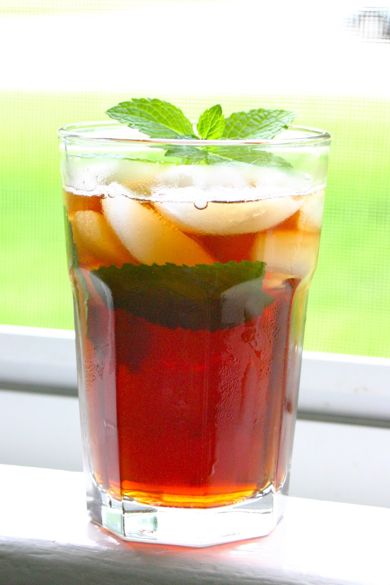

Ice coffee

Description
Ice coffee can be prepared in different ways but our way usually is
tastier. It is mostly consumed on hotter days in summer. The key is to
prepare a jug of hot, preferably filter coffee at first. Do not try to
make cold coffee instantly as this will result in bad taste.
Ingredients
Steps
- First grind the coffee if you don't have it already grinded
-
Prepare the coffee like you usually do, for example in your filter
coffee machine or Aeropress
- After you have prepared your hot coffee, pour it into a jug
- Leave the jug in your kitchen to cool down
- When it has cooled down to room temperature, put some ice in it
- Put the jug in the refrigerator
- When the coffee is cold enough you can pour your ice coffee
- Enjoy!